Префектура Нара · Нара, Сони, Уда, Тэнри · еда и маршрут
«Киёсуми-но сато Ава»: традиционные овощи Ямато и два дня по местам, где начиналась Нара
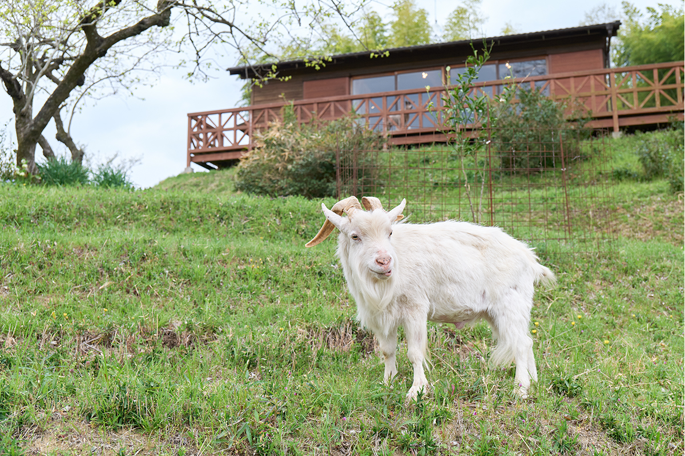
На холме к востоку от города Нара супруги Масаюки и Ёко Миура с 1998 года собирают семена старых местных овощей, растят их сами и подают в своём ресторане. Рассказываем, что такое традиционные овощи Ямато, и проезжаем вместе с Масаюки Миурой по его любимым местам, где в Наре что-то началось впервые.
Ферма
Ресторан на холме Киёсуми
Холм к востоку от города Нара местные называют Киёсуми-но сато, «чистая деревня». В 2002 году здесь, в деревянном доме на склоне, открылся фермерский ресторан «Киёсуми-но сато Ава». Его держат Масаюки и Ёко Миура, которые почти тридцать лет изучают, выращивают и сохраняют традиционные овощи Ямато, старые местные сорта префектуры Нара. Ямато это древнее название этих земель, а с ними и всей Японии.
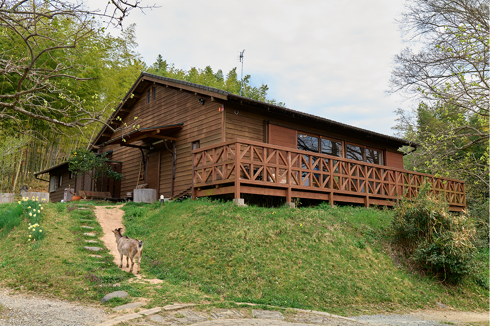
Масаюки родом из префектуры Киото, но связан с Нарой с юности и живёт здесь уже много лет. Сам он себя называет исследователем традиционных овощей. Ёко занимается грядками и кухней. Почти всё, что подают в ресторане, они вырастили сами: около 120 видов овощей, включая традиционные сорта Ямато, а ещё рис, лекарственные травы, фруктовые деревья и горные травы, всего около 140 культур в год.
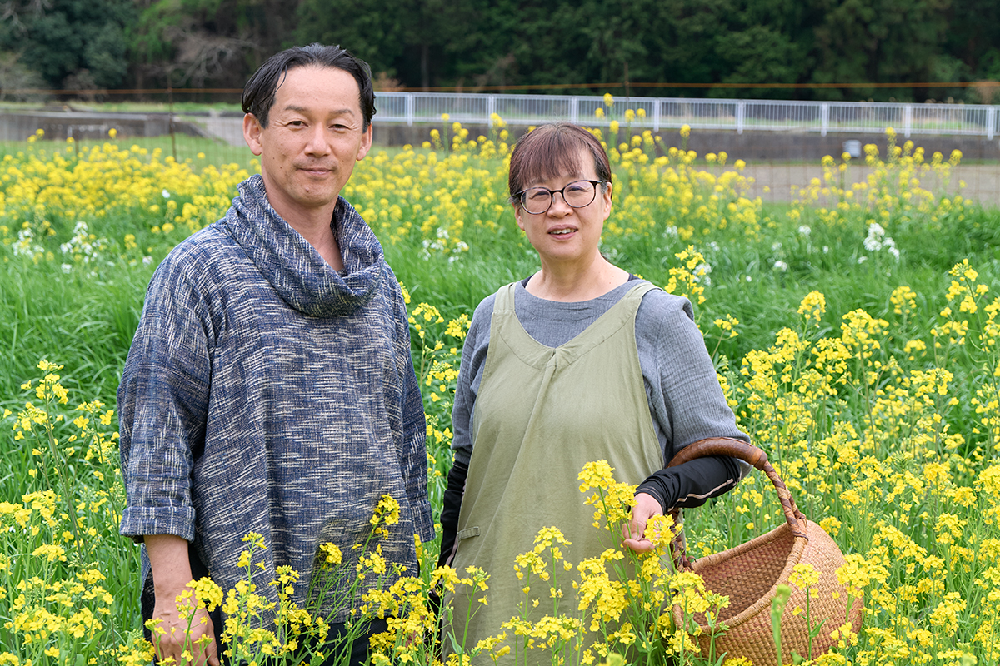
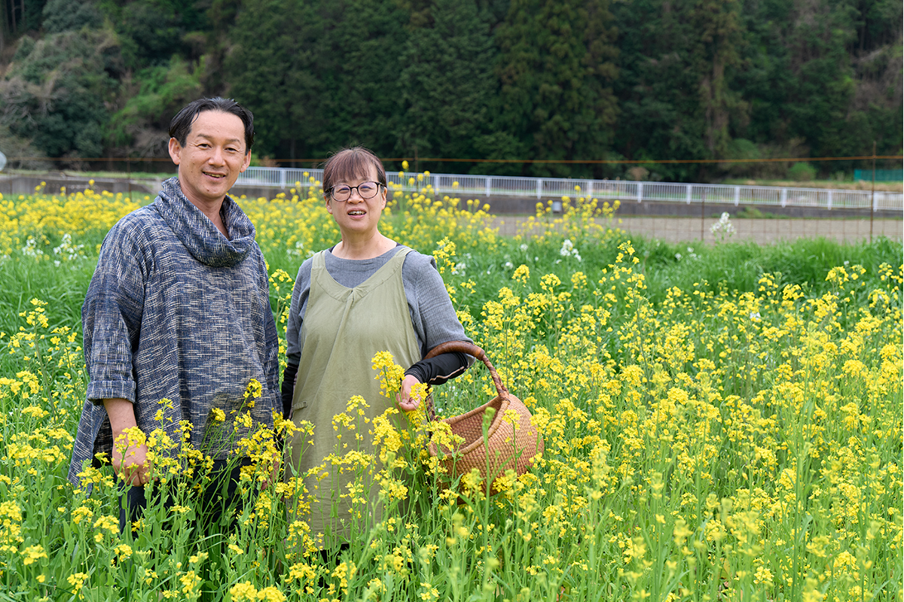
Обед здесь это курс из нескольких блюд, где каждое построено вокруг вкуса одного-двух овощей. Когда блюдо приносят на стол, о каждом овоще рассказывают: как он называется, откуда он и чем отличается от магазинного. С террасы открывается вид на всю котловину Нара.
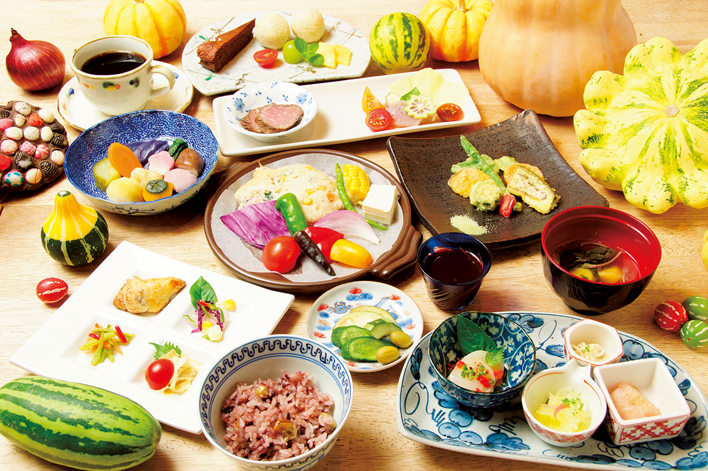
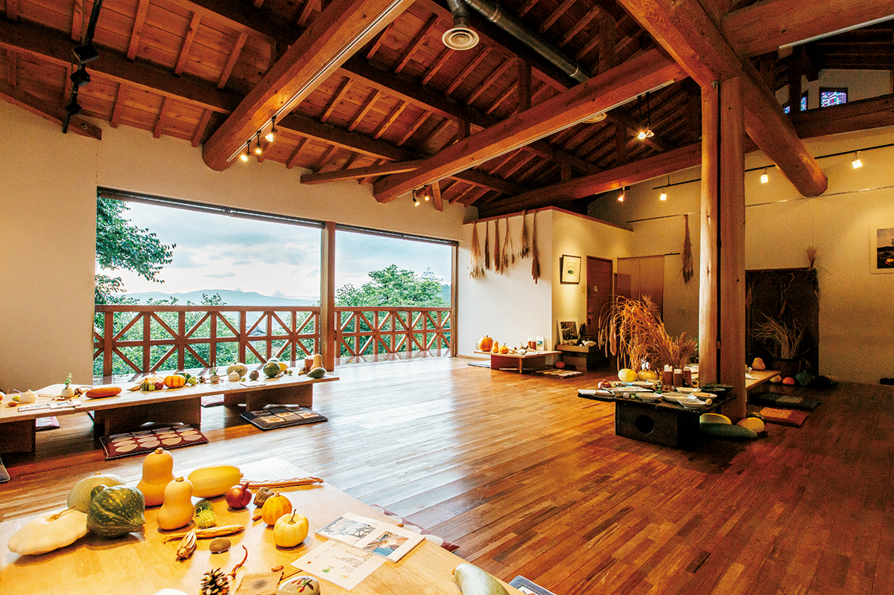
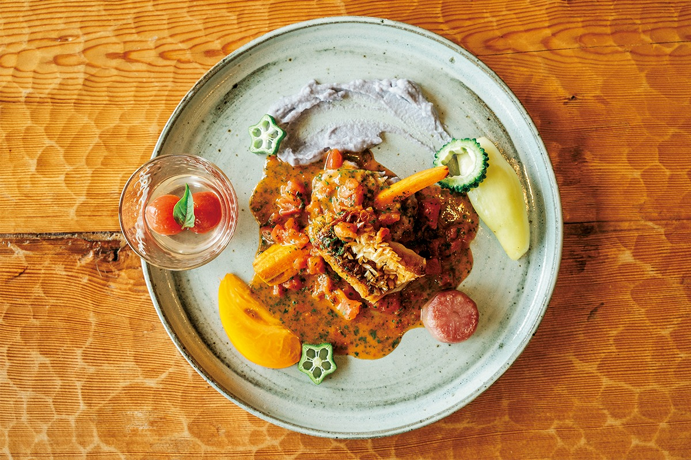
Встречают гостей не только хозяева. У ресторана живут белый козёл Петер и коричневая коза Клара, с ними так часто фотографируются, что позируют они уже совершенно спокойно.
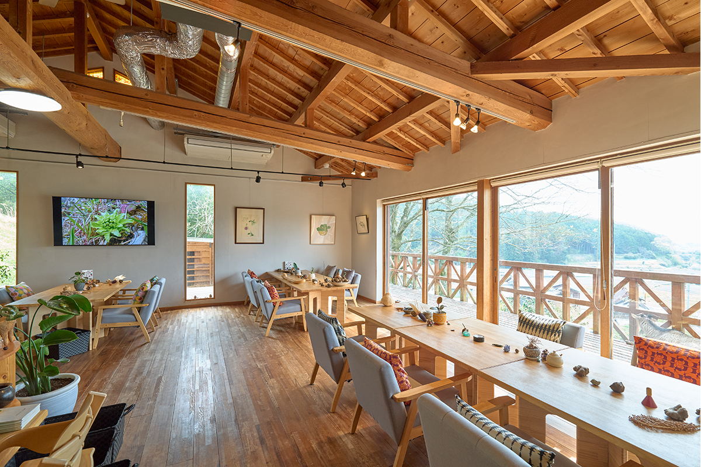
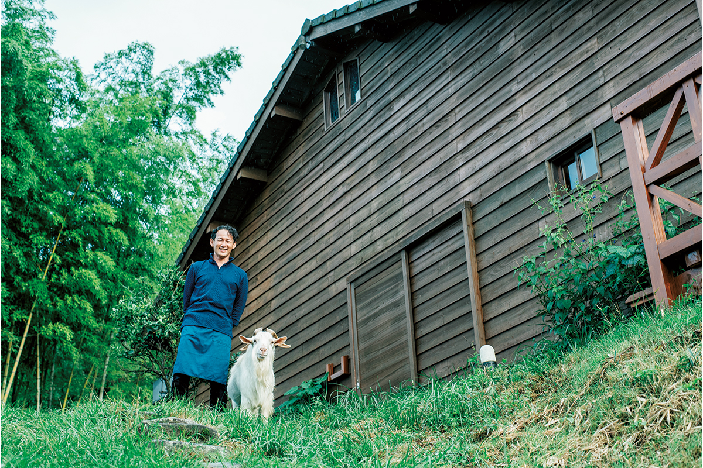
Что это
Традиционные овощи Ямато
Своими традиционными овощами гордится каждая префектура, и каждая определяет их по-своему. В Токио это сорта, которые выращивали в городе с периода Эдо до середины XX века, в Киото те, что растили в префектуре ещё до эпохи Мэйдзи. В Наре правила такие:
- сорт выращивают в префектуре с довоенных времён;
- его растят особым способом, который хранит историю и культуру местности;
- у него свой вкус, запах, форма или своя история происхождения.
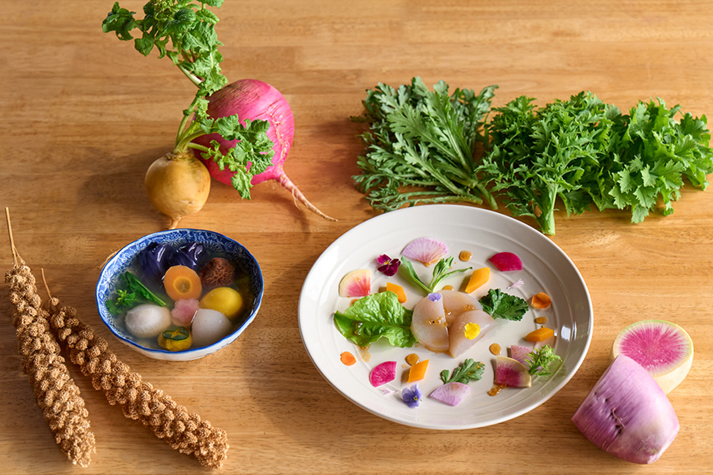
Подбирать такие сорта в Наре начали в 1989 году, а первый список префектура утвердила в 2005-м: десять традиционных овощей и ещё пять «особых овощей Ямато», за которыми нужен особенно тщательный уход при выращивании и сборе. Вместе их называют «овощами Ямато», это бренд префектуры. После нескольких дополнений традиционных сортов в списке стало 20. Среди них «ямато-мана», которую считают одним из прародителей всего семейства капустных; огурец «ямато-сансяку», слишком горький, чтобы есть его сырым, но незаменимый для маринада нарадзукэ; «нампаку-дзуйки», стебли таро, которые к 2018 году выращивал всего один человек.
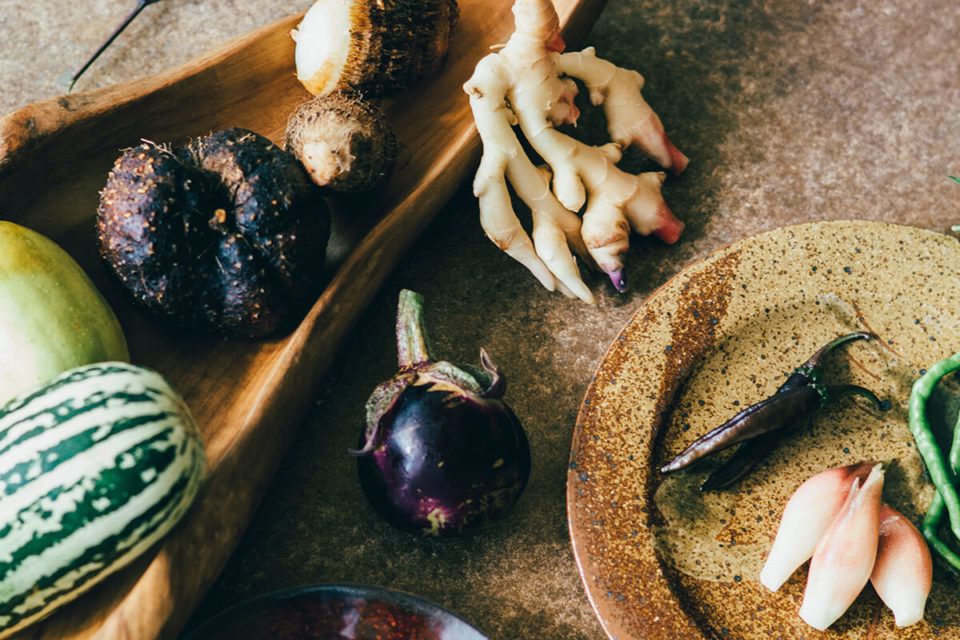
При этом в префектуре полно сортов, которые подходят под все условия, но в список не вошли. Например, плоская репа «имаити-кабу» со сладкой глянцевой ботвой, огурец «ногава-кюри» из горной деревни Носэгава или листовая горчица такана из деревни Тоцукава: без неё не сделать местные мэхари-суши, рисовые шарики в маринованных листьях.
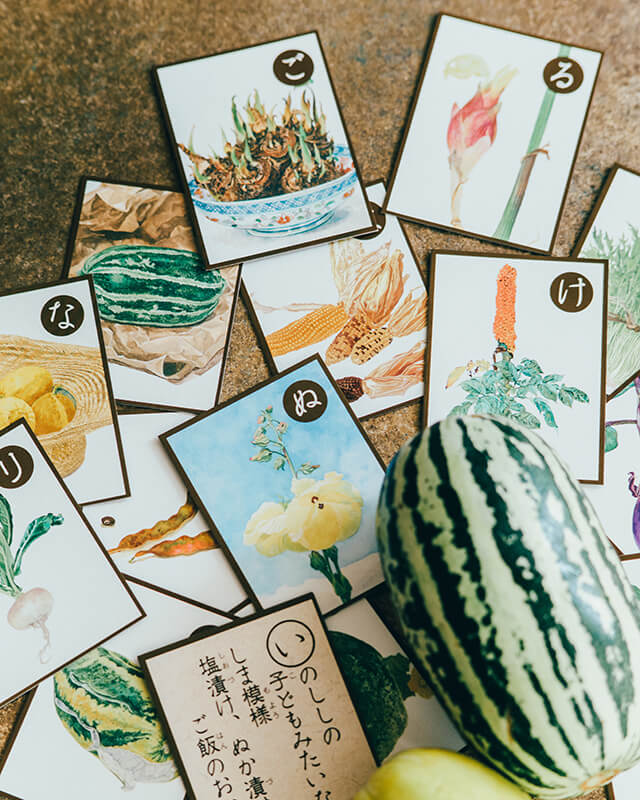
В поиске сортов у Масаюки Миуры есть и философская сторона. По его словам, у слова «начало» два смысла: «зародилось здесь» и «впервые пришло сюда». Исконно японских овощей, говорят, всего шесть: трилистник мицуба, васаби, аралия удо, омежник сэри, белокопытник фуки и дудник аситаба. Всё остальное пришло с материка и уже здесь, приспособившись к земле, стало своим. Арбуз, например, родом из Африки, в Японию он попал через Китай около 1640 года, а в Наре из него вывели свой сорт, арбуз Ямато.
«Сорта, которые вырастили и передали нам предки, это ресурс местности и вместе с тем бесценное культурное наследие: в них живут здешняя кухня и способы выращивания. Для возрождения провинции главное разумно использовать то, что у неё есть, и без традиционных овощей тут не обойтись»
Масаюки Миура
Почему
«Семейные овощи»
Традиционные овощи часто кажутся чем-то музейным, но их, по словам Масаюки Миуры, передавали из поколения в поколение не ради сохранения семян, а прежде всего ради того, чтобы их есть. Вокруг каждого сорта сложилась своя кухня, и сохранился он вместе с ней.
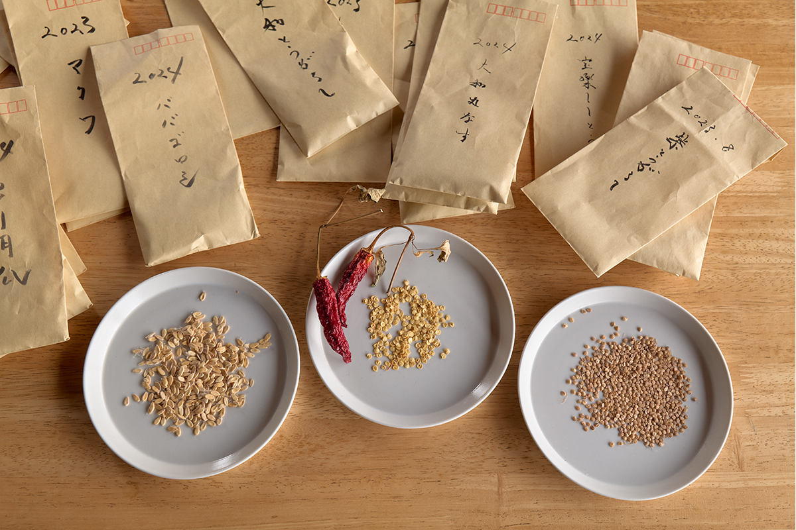
В Наре, в отличие от Киото и Осаки, почти не было культуры ресторанов, и эти овощи жили прежде всего в домашней кухне, передаваясь в семьях. Когда супруги Миура спрашивают крестьян, почему те продолжают их растить, ответ почти всегда один: «Их легко выращивать». Семена не покупают, а собирают сами, и сорт давно привык к здешней земле и погоде.
«Ещё говорят: потому что их любит кто-то в семье, потому что вкусно и нравится самому, потому что радуются люди, которым я обязан. Если сказать по-научному, эти овощи выращивали не на продажу, а по личному вкусу. Не ради денег, а ради лица того, кто будет их есть»
Масаюки Миура
Поэтому супруги называют их «семейными овощами». Вот несколько сортов, которые растут на их грядках.
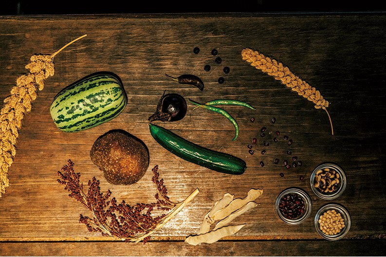
Таро «адзимаимо»
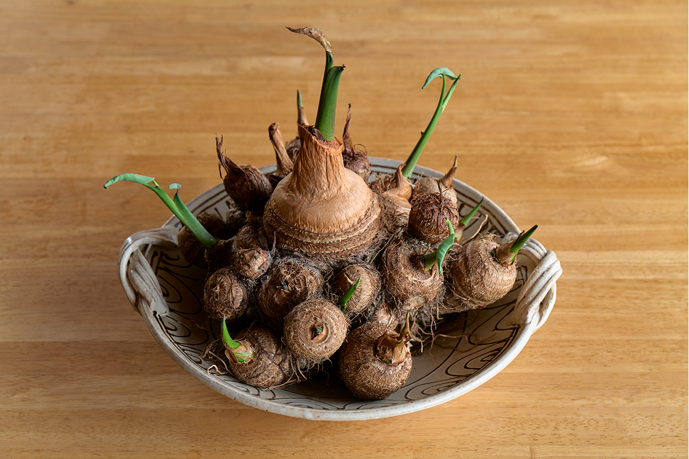
У этого таро приятная вязкость и насыщенный вкус. Есть история, что Коносукэ Мацусита, основатель Panasonic, говорил о нём: «Попробуешь этот, и другой уже есть не сможешь».
Конняку
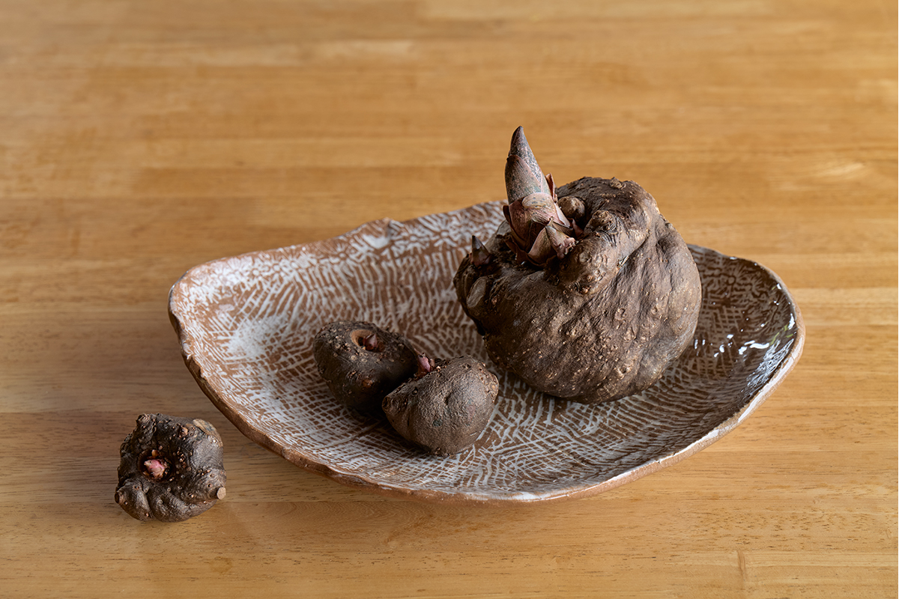
Конняку здесь растят по старинке: клубни сажают и не трогают, а выкапывают только те, что выросли достаточно крупными. Так его выращивают в городках Симоити, Ёсино и соседних.
Фасоль и просо
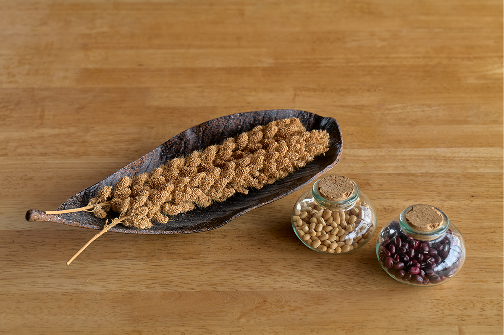
Красная фасоль «уда-дайнагон-адзуки» мягкая и душистая, у белой «ямато-сиро-адзуки» тонкий вкус. Местное просо «мукодамаси» отличается сильной клейкостью.
Дыня «огон-макува»
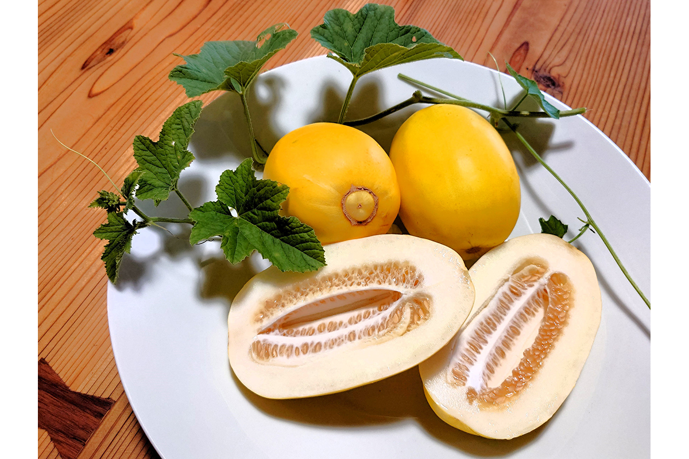
Дыню, которая упоминается в «Манъёсю», древнейшей японской поэтической антологии VIII века, считают дыней макува. Её выращивают больше 2000 лет, у неё старинный вкус, и её до сих пор ставят на алтарь в праздник поминовения предков Обон.
Репа «имаити-кабу»
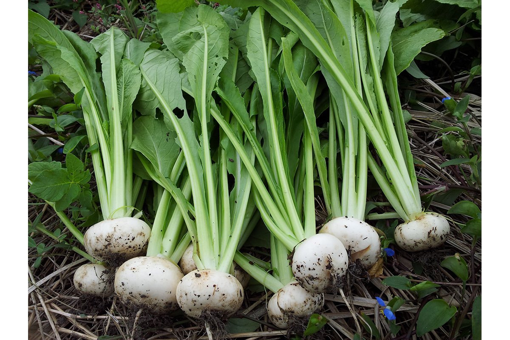
Репа мягкая, у неё своеобразный яркий вкус. Её тушат и солят, а нежную ботву, похожую на горчицу нодзавана, едят как листовой овощ.
Баклажан «ямато-марунаса»
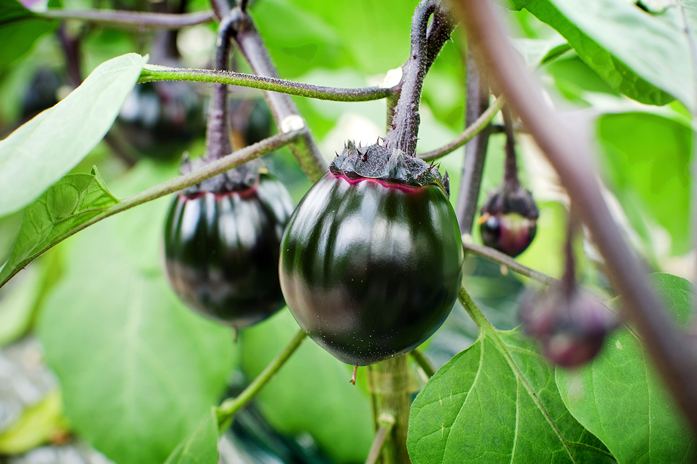
Этот круглый баклажан около 10 см в диаметре, мякоть у него плотная. При варке он держит форму и остаётся упругим, поэтому его жарят во фритюре и запекают с пастой мисо.
Зелень «ямато-мана»
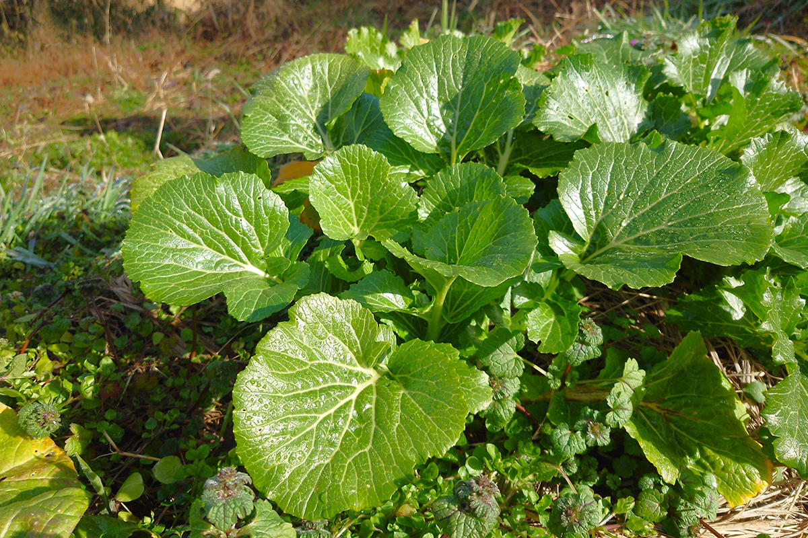
Зелень мягкая, с особой сладостью. Её солят, отваривают и делают «тайтан», домашнее блюдо, где зелень тушат с жареным тофу.
Путь
Из больницы на грядку
До овощей Масаюки работал в частном институте, который изучал помощь людям с инвалидностью, а Ёко была медсестрой в большой больнице. Обоим казалось, что медицина и социальная работа заняты в основном лечением, а не тем, чтобы люди не болели. Их интересовала профилактика и долгая здоровая жизнь, и супруги отправились смотреть, как живут в разных странах.
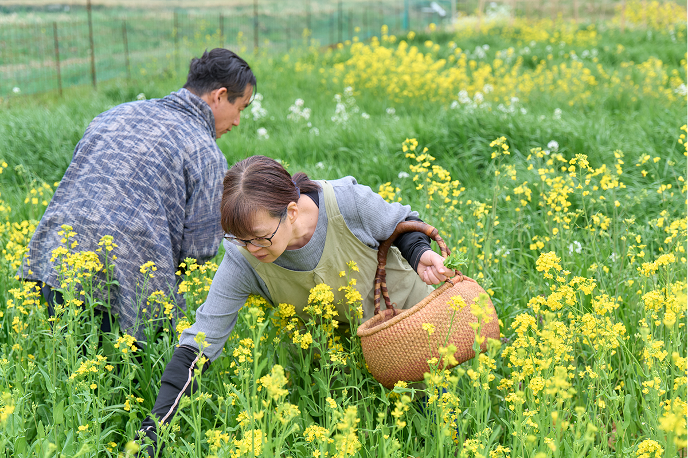
Поворотным стало время, проведённое в поселении коренных американцев в США. Там почти не было тех проблем, с которыми супруги сталкивались на работе дома, даже травли. В центре жизни общины были семена кукурузы, главной еды: её растили вместе, а кухню передавали из поколения в поколение.
Вернувшись, супруги стали искать, что в Японии играет роль той кукурузы. Японская кухня богата закусками и гарнирами, а гарниры на столе веками давали традиционные овощи. Выяснилось, что там, где такие сорта сохранились, крепче связи между людьми, живы обычаи и взаимопомощь, богаче природа и дольше здоровая жизнь.
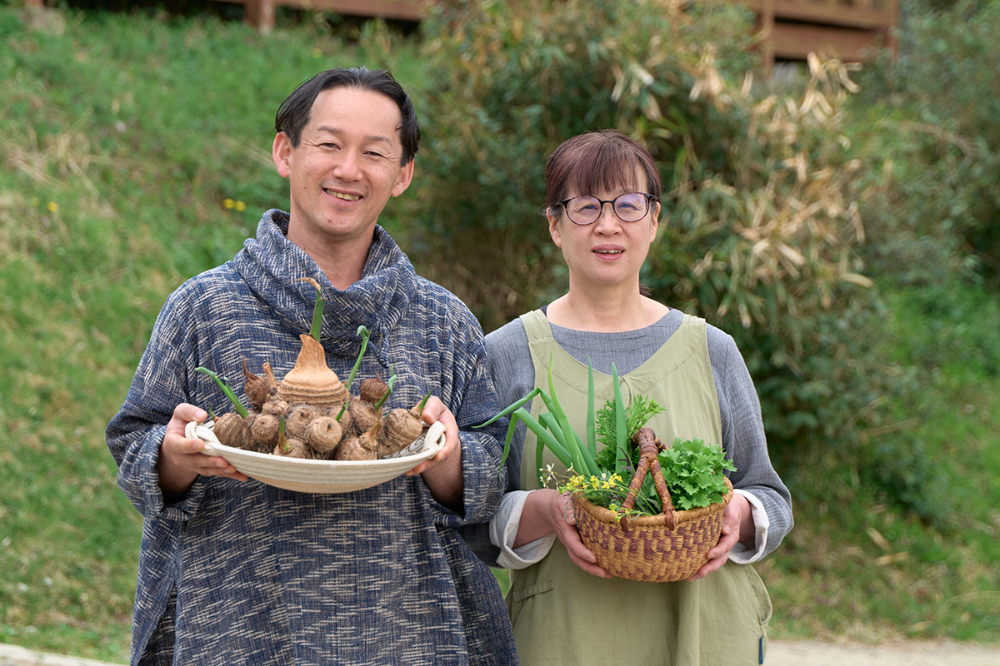
Никакой системы, которая бы берегла такие сорта, тогда не было. Супруги ездили по префектуре, говорили с теми, кто ещё растит старые овощи, брали у них семена и сеяли на своём поле, чтобы сорт не пропал, даже если что-то случится с хозяином. Так появилась некоммерческая организация, а потом супруги помогали префектуре составлять официальный список. В 2016 году префектура открыла генетический банк, где собирают и хранят семена растений, связанных с Нарой. Туда передали и семена, которые супруги хранили годами, и теперь каждый сорт хранится в двух местах.
Около 2016 года появился и «проект фермы шефов». Свободные поля на холме Киёсуми отдают поварам: они выращивают традиционные овощи и сами готовят из них. В 2025 году в проекте участвовали пять пар, считая самих Миура.
«Наверное, я просто никогда не чувствовал, что мне тяжело. Это очень весело, а главное, очень вкусно»
Масаюки Миура о том, откуда силы на тридцать лет работы
Масаюки вспоминает книгу «The Blue Zones» исследователя Дэна Бюттнера, который объездил места, где живёт больше всего долгожителей. Традиционные овощи там едят постоянно, а среди девяти правил долгой жизни у Бюттнера есть, например, «быть с людьми». Супруги хотят перенести эти принципы в свою жизнь через овощи Ямато: такой образ жизни не нагружает планету, и если каждый начнёт с того, что может, это пойдёт на пользу и людям, и земле.
«Киёсуми-но сато Ава»
- Адрес
- префектура Нара, Нара, Такахи-тё, 861
- Телефон
- +81 742-50-1055
- Часы работы
- 11:45–16:00 (последний заказ в 15:30), только по предварительной записи
- Выходные
- понедельник, вторник, среда, четверг
- Сайт
- kiyosumi.jp
Маршрут
Два дня по местам «начала»
Масаюки Миура предлагает увидеть два лица префектуры: котловину Нара, где стояла древняя столица, с её изяществом, и плато Ямато в глубине гор с его деревенской простотой. Ключевое слово маршрута «начало».
«Нара на самом деле место, где зародилось множество вещей и обычаев. Здесь храм Сёрякудзи, где родилось очищенное сакэ, и святилище Химуро, связанное с ледниками химуро: в древности в них хранили лёд до самого лета. В Тэнри стоит Исоноками-дзингу, одно из древнейших святилищ страны, его зовут святилищем начала. А деревня Сони считается родиной японского лака. Вся культура повседневной жизни начиналась здесь, в Наре»
Масаюки Миура
Маршрут проходит по городу Нара, плато Сони, городу Уда и Тэнри и рассчитан так, чтобы не тратить много времени на дорогу. Удобнее всего ехать на машине.
День первый, 11:00. Станция Kintetsu-Nara и обед
Поезд приходит на станцию Kintetsu-Nara к 11:00, а в полдень можно обедать в «Киёсуми-но сато Ава». В 2020 году у супругов было ещё и кафе coto coto в центре города, рядом с оживлёнными улицами у станции и прудом Сарусава, попроще и уютнее. Там готовили из тех же овощей, а летом подавали колотый лёд какигори: город Нара считают и родиной японской культуры льда.
Сейчас кафе уже не работает. Зато в старом квартале Нарамати у супругов есть второй ресторан, «Ава Нарамати»: те же овощи Ямато, обеды и ужины курсом, только по предварительной записи.
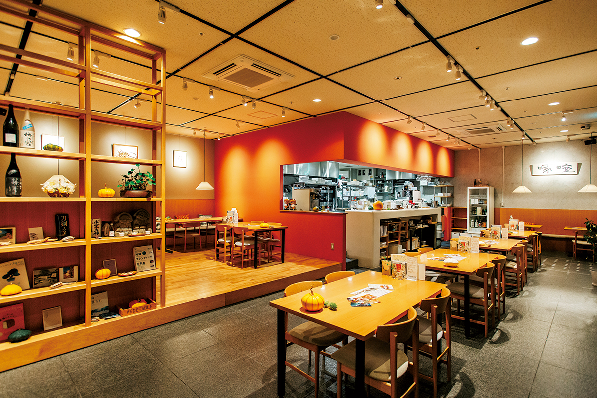
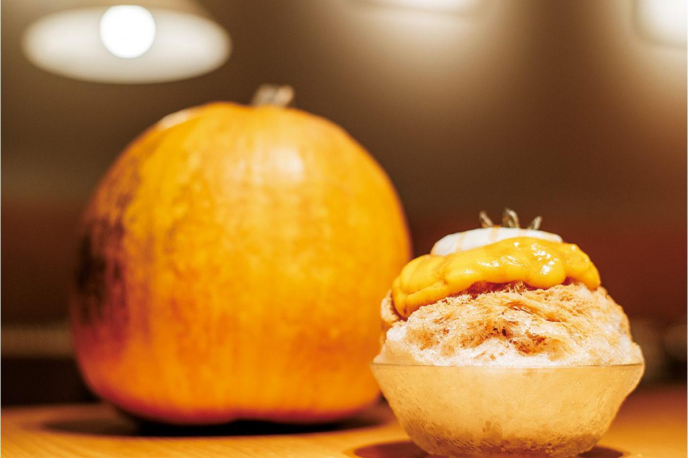
«Ава Нарамати»
- Адрес
- префектура Нара, Нара, Сёнанъин-тё, 1
- Телефон
- +81 742-24-5699
- Часы работы
- 11:30–14:30, 17:30–21:00, только по предварительной записи
- Выходные
- вторник
- Цены / Вход
- обед от 3190 иен, ужин от 4290 иен
- Сайт
- kiyosumi.jp
15:00. Храм Сёрякудзи и лес
Храм Сёрякудзи, в восьми минутах на машине от ресторана, считают местом, где родилось очищенное сакэ. Масаюки любит японское сакэ и этот храм тоже. Осенью здесь хорошо просто гулять по лесу вокруг.
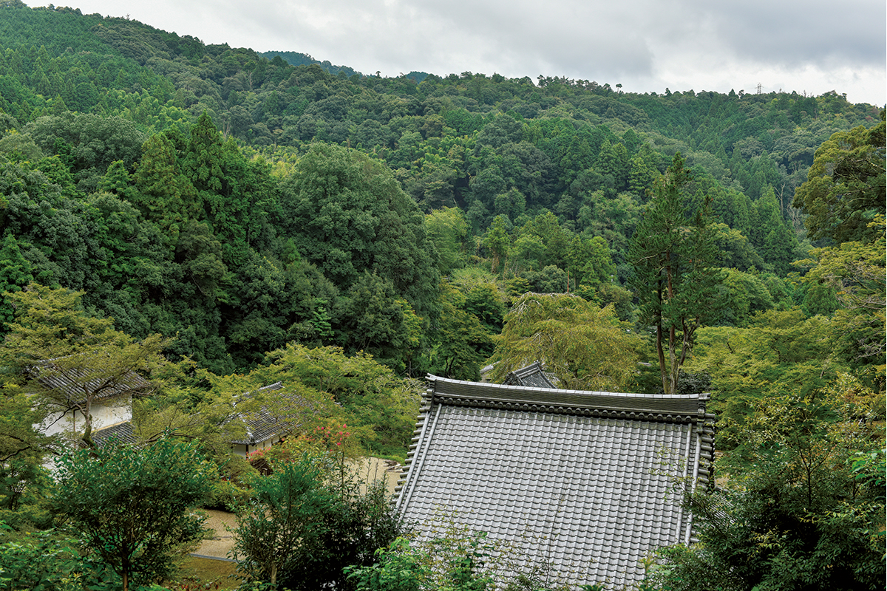
Храм Сёрякудзи
- Адрес
- префектура Нара, Нара, Бодайсан-тё, 157
- Телефон
- +81 742-62-9569
- Часы работы
- 9:00–17:00, с декабря по февраль до 16:00
- Цены / Вход
- 500 иен
- Сайт
- shoryakuji.jp
18:00. Ночь в лесной оберже «Хосисаки Кирара»
Ночевать Масаюки советует в деревне Сони, в оберже «Хосисаки Кирара». Её открыли в июле 2019 года, принимают здесь одну компанию в день. Оберж стоит на возвышенности, и из стеклянного зала видны поля и горы. Кухня французская, но почти целиком из продуктов префектуры Нара и с большим количеством местных овощей. Можно приехать и только поесть, но обязательно по записи.
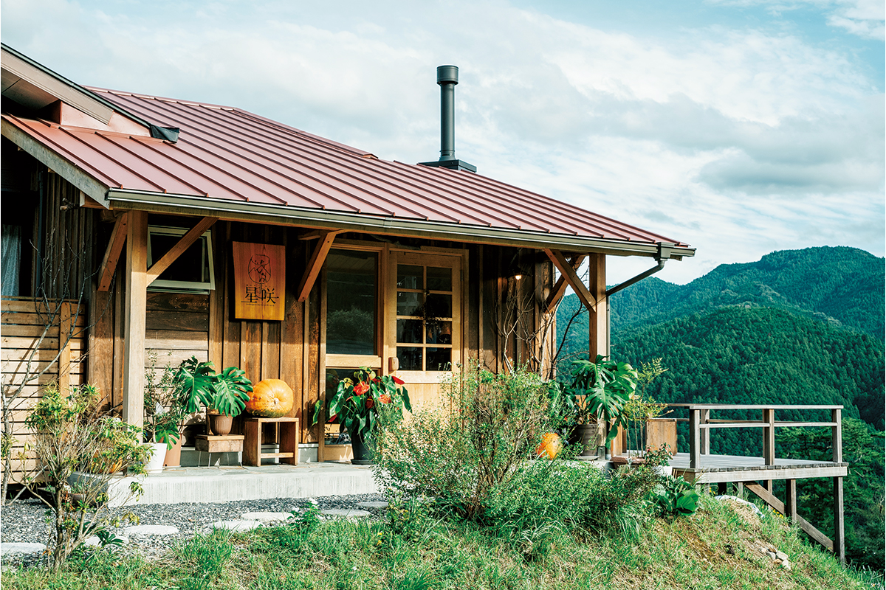
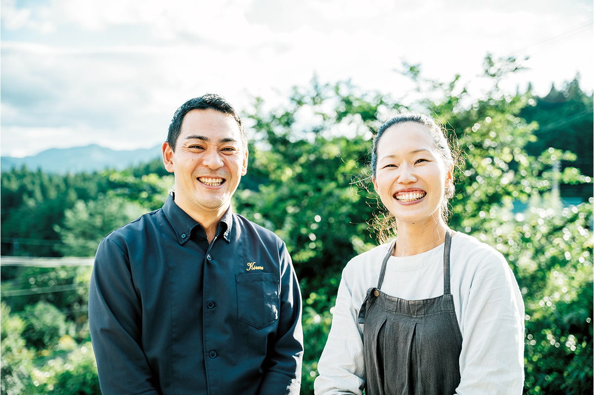
«Думаю, это один из лучших обержей на всём плато Ямато. Хозяева очень славные люди, а блюда из местных овощей вкусные»
Масаюки Миура
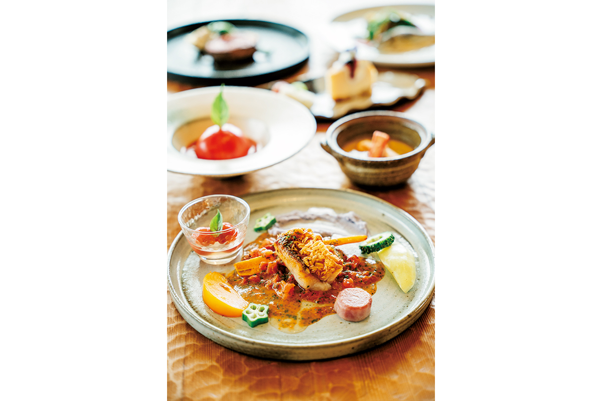
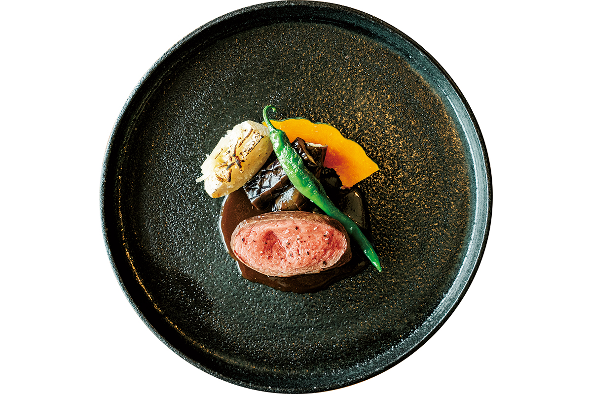
Лесной оберж «Хосисаки Кирара»
- Адрес
- префектура Нара, уезд Уда, деревня Сони, Конагао, 658-1
- Телефон
- +81 745-88-9155
- Часы работы
- 11:30–15:00, 17:00–22:00 (только ресторан, последний вход за 2 часа до закрытия)
- Выходные
- среда
- Цены / Вход
- 61 600 иен за ночь с ужином и завтраком на двоих, с налогом и обслуживанием
- Сайт
- kirara-soni.com
День второй, 10:00. Плато Сони и местное пиво
Утро стоит провести на плато Сони у подножия горы Куросо. Осенью его сплошь покрывает серебристый мискантус сусуки, и посмотреть на это съезжаются со всей округи. Место открытое и подходит всем, от детей до пожилых. Здесь же варят своё пиво.
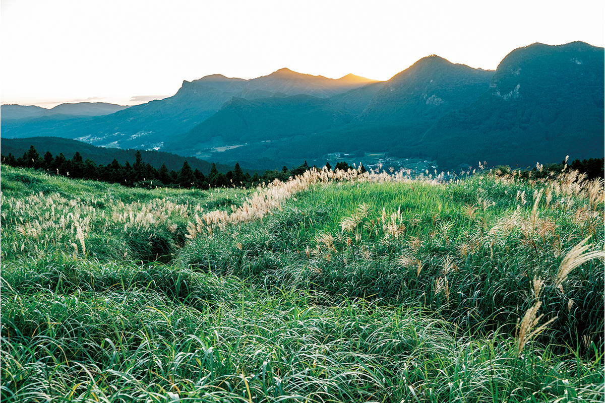
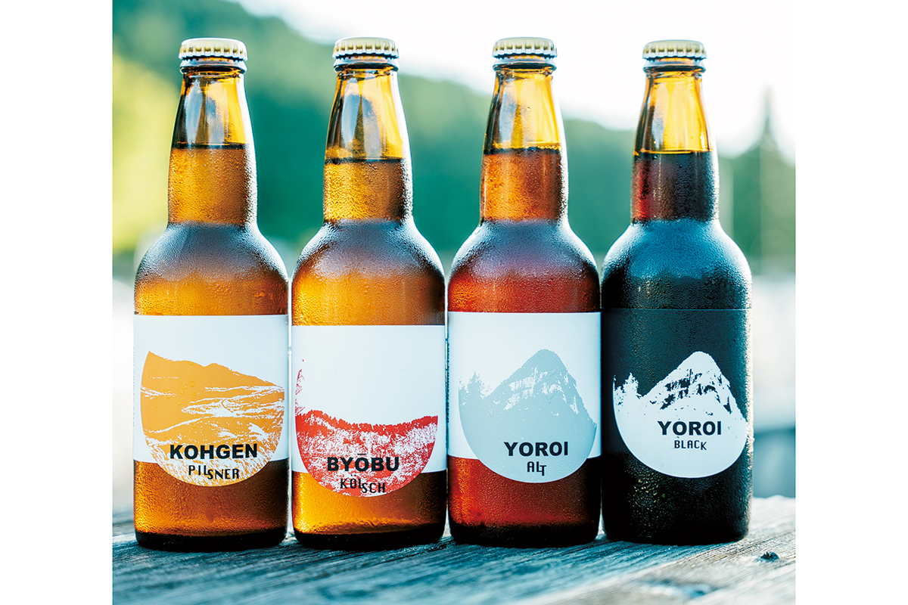
«Оно правда вкусное, мы даже подавали его в coto coto»
Масаюки Миура о пиве плато Сони
11:00. Онсэн «Окамэ-но ю»
Это один из самых любимых онсэнов префектуры. Вода здесь мягкая, словно шелковистая, есть купальня под открытым небом. Сюда ездят и местные, и туристы, а на выходе можно купить сувениры.
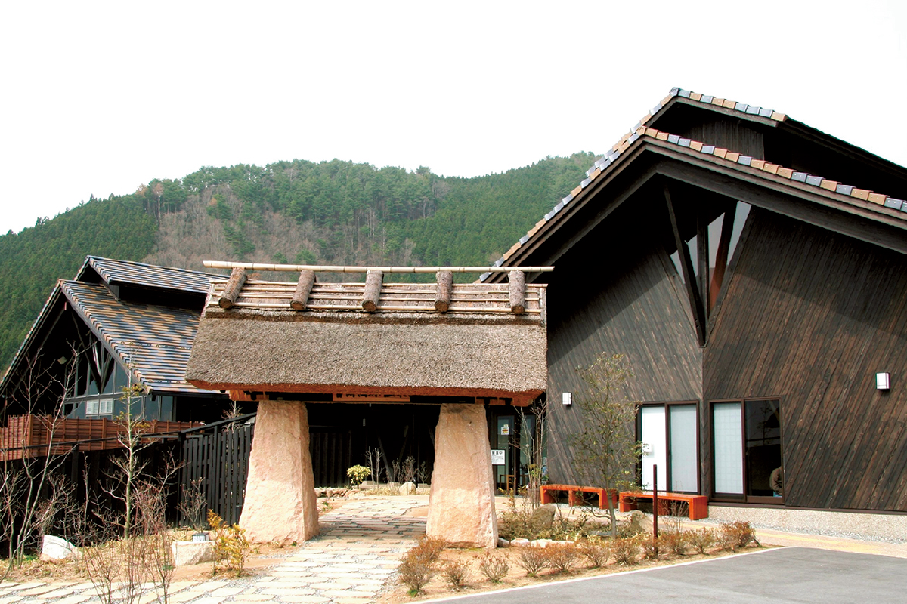
Онсэн «Окамэ-но ю»
- Адрес
- префектура Нара, уезд Уда, деревня Сони, Тарадзи, 830
- Телефон
- +81 745-98-2615
- Часы работы
- 11:00–21:00 (вход до 20:00), с декабря по март до 20:30 (вход до 19:30)
- Выходные
- среда (если праздник, то следующий день)
- Сайт
- soni-kogen.com
12:00. Обед из лекарственных трав в храме Дайгандзи
Следующая остановка в городе Уда, и связана она с лекарственными травами, которыми Масаюки Миура увлёкся в последние годы. В летописи «Нихон сёки» (720 год) записано, что первую в Японии «лекарственную охоту» устроили именно здесь, на равнине Акино: мужчины добывали оленьи рога, ценное лекарство, а женщины собирали травы. Из Уды вышли основатели нескольких фармацевтических компаний, в том числе тех, что сегодня называются Rohto и Tsumura, и город до сих пор развивается как город лекарственных трав. В его квартале Мацуяма, старом купеческом городе под государственной охраной, рядом друг с другом стоят музей, сад трав и храм, где кормят травами.
«Здесь можно узнать историю лекарств, своими глазами увидеть травы и попробовать блюда из них. Для тех, кого интересуют травы и китайская медицина, это настоящая Мекка, и все три места обязательно стоит посетить»
Масаюки Миура
Храм Дайгандзи почти 50 лет подаёт курс из блюд на лекарственных травах. На участке около 6600 квадратных метров растёт множество трав.
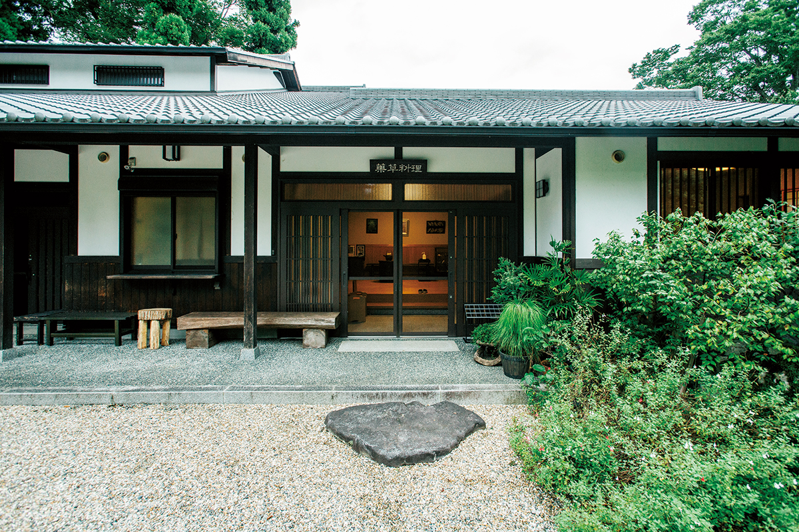
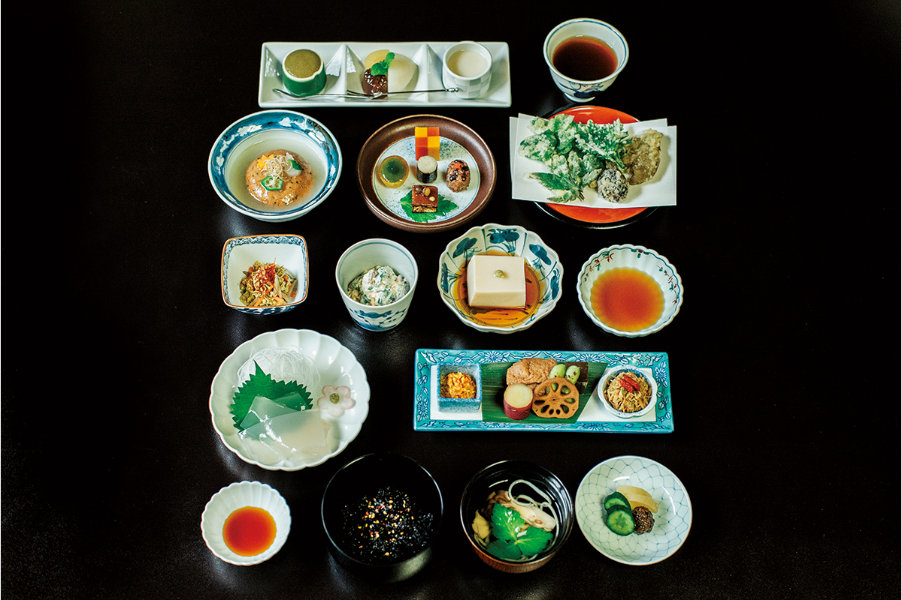
Храм Дайгандзи
- Адрес
- префектура Нара, Уда, Оуда, Хироо, 736
- Телефон
- +81 745-83-0325 (обязательна запись)
- Часы работы
- 11:30–14:00
- Выходные
- нерегулярно
13:30. Сад «Морино кю-якуэн» и музей «Кусури-но яката»
Сад «Морино кю-якуэн» заложили в годы Кёхо (1716–1736), и это старейший из дошедших до нас частных садов лекарственных растений в Японии. Его основал Тосукэ Морино (1690–1767), он же Сайкаку, из семьи, которая делает крахмал кудзу. На участке около 10 000 квадратных метров растёт около 250 видов лекарственных трав и деревьев.
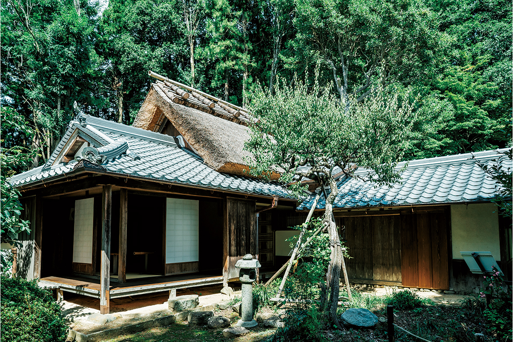
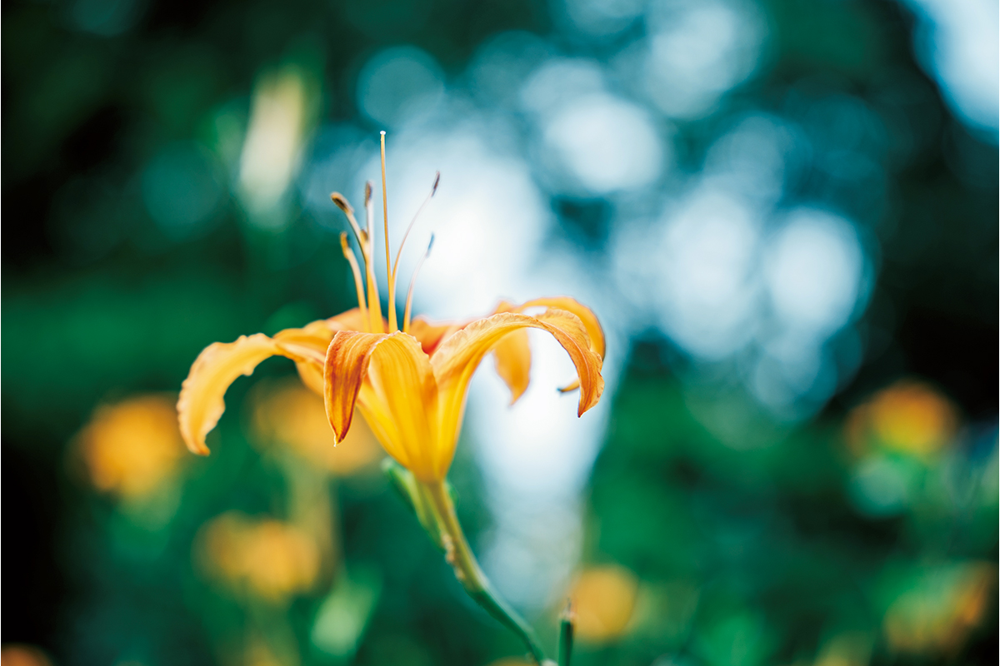
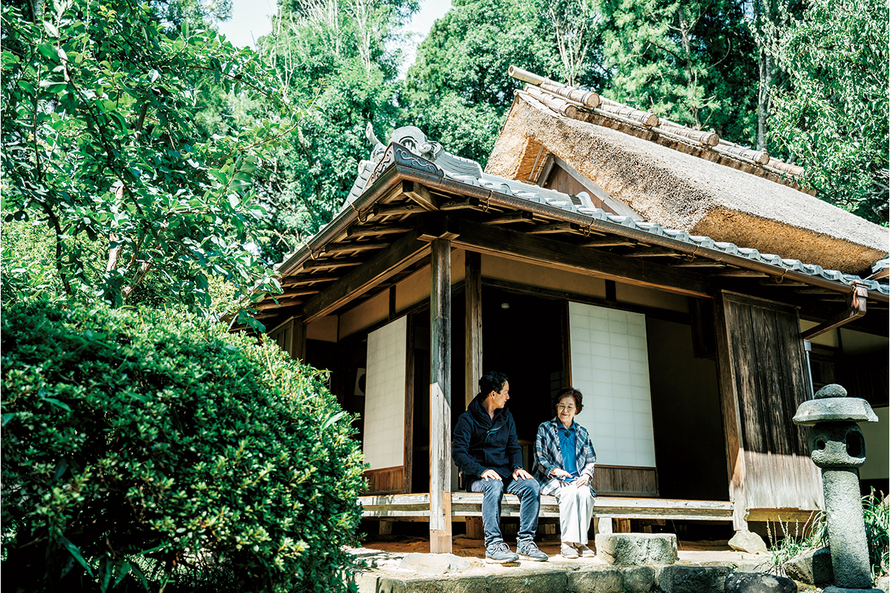
«Морино кю-якуэн»
- Адрес
- префектура Нара, Уда, Оуда, Камисин, 1880
- Телефон
- +81 745-83-0002
- Часы работы
- 9:00–17:00
- Цены / Вход
- 300 иен
- Сайт
- morino-kuzu.com
Рядом музей истории и культуры города Уда «Кусури-но яката», «Дом лекарств». Он хранит память о временах, когда здесь процветала торговля лекарствами. Музей занимает дом семьи Хосокава, торговцев лекарствами оптом. Из этой семьи происходила мать Томокити Фудзисавы, основателя фирмы, из которой выросла нынешняя Astellas.
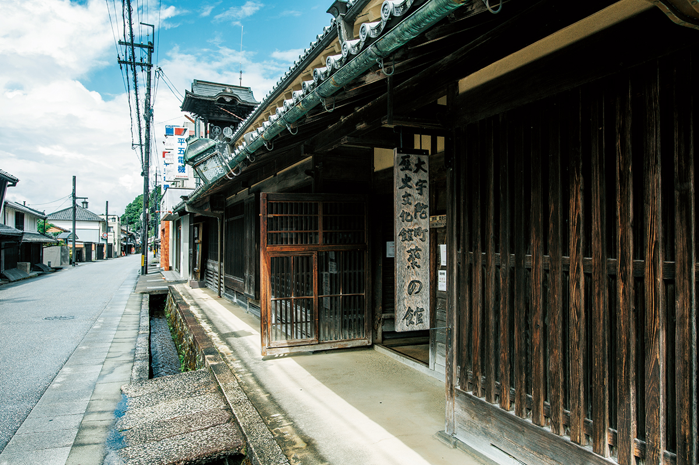
Музей «Кусури-но яката»
- Адрес
- префектура Нара, Уда, Оуда, Ками, 2003
- Телефон
- +81 745-83-3988
- Часы работы
- 10:00–16:00
- Выходные
- понедельник и вторник (если один из них праздник, то среда)
- Цены / Вход
- 310 иен
15:30. Святилище Исоноками-дзингу
Святилище Исоноками-дзингу в Тэнри одно из древнейших в Японии. С запретной земли за молельным залом подняли много важных культурных ценностей, а в сокровищнице хранится национальное сокровище, меч Ситисито с шестью ветвями-клинками. Молельный зал старейший из сохранившихся и тоже признан национальным сокровищем.
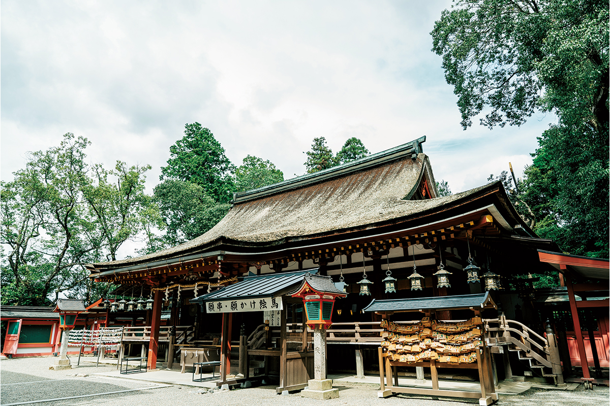
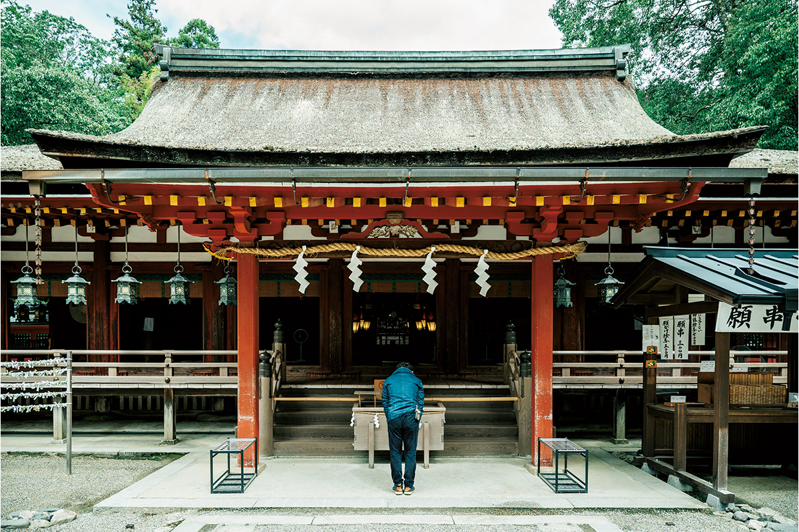
Святилище Исоноками-дзингу
- Адрес
- префектура Нара, Тэнри, Фуру-тё, 384
- Телефон
- +81 743-62-0900
- Часы работы
- от восхода до заката (внутри ворот)
- Выходные
- нет
- Сайт
- isonokami.jp
17:00. Сакэ в дорогу из магазина «Нобори сакэтэн»
«Если покупать местное сакэ Нары в подарок, то обязательно в "Нобори сакэтэн"»
Масаюки Миура
Здесь продают сакэ Нары и известные марки со всей страны. Хозяин с увлечением рассказывает, как пить каждое сакэ, и подробно объясняет, чем они отличаются. Можно и попробовать. «Из-за дегустации я всегда здесь задерживаюсь», признаётся Масаюки Миура.
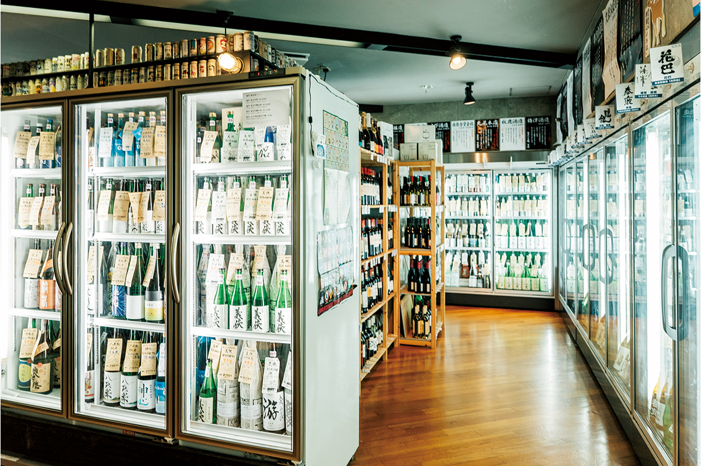
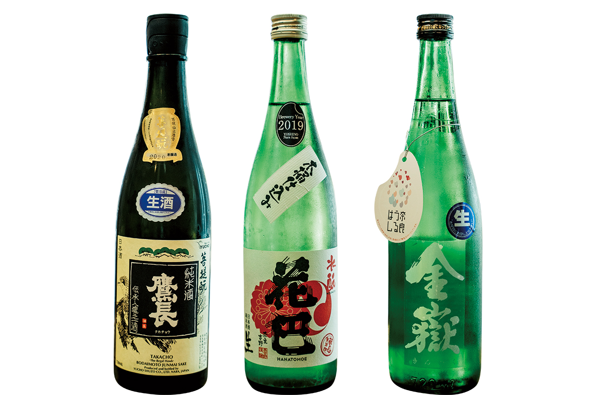
Все три сакэ продавались неотфильтрованными, непастеризованными и неразбавленными. В 2020 году бутылка 720 мл «Кингаку» стоила 1430 иен, «Ханатомоэ» и «Такатё» по 1650 иен.
«Нобори сакэтэн»
- Адрес
- префектура Нара, Тэнри, Тайносё-тё, 555
- Телефон
- +81 743-62-0218
- Часы работы
- 9:30–20:30
- Выходные
- воскресенье
- Сайт
- nobori-sake.com
Фото: Юта Того, Марико Тая, Норимаса Харада.